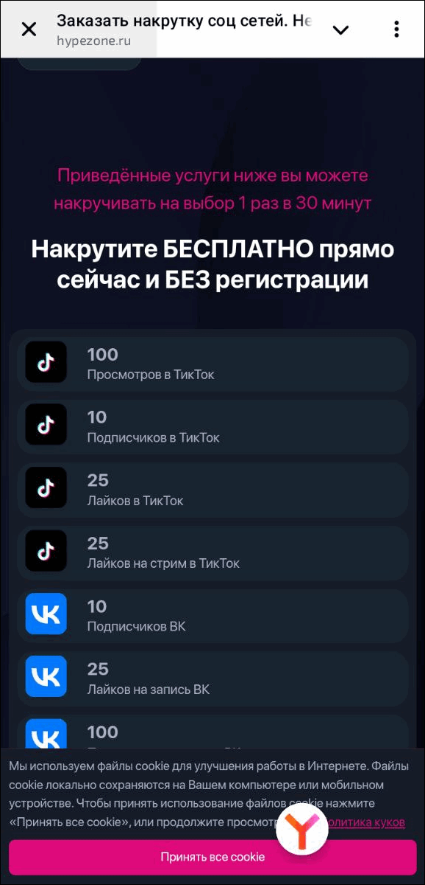
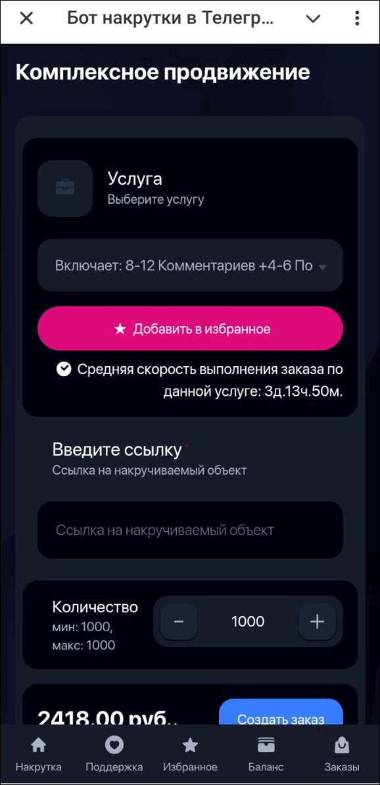

Боты для продвижения в Инстаграме: ТОП 7 лучших

Боты для продвижения Инстаграм*-аккаунтов актуальны в контексте повышения охвата и увеличения аудитории. Это быстрый способ как получить подписчиков, не создавая дополнительные аккаунты и не подключая свою основную страницу из Инстаграма*.
ТОП-7 ботов для продвижения
5ка лидеров:
Перейдя в бота, вы увидите кнопку «Старт», благодаря которой будет запущено меню. Пользователь может выбрать социальную сеть, куда нужно получить определенный вид активности. Предположим, комплексное продвижение страницы в Инстаграме* за счет лайков: нужно перейти в чат и выбрать услугу «Накрутка лайков». Далее, появится окно с вводом ссылки на публикацию, куда нужно отправить отметки «Мне нравится» и их количество.

В боте есть опция «Бесплатная накрутка», благодаря которой можно получить первую сотню подписчиков или лайков.
@V_TOP_soc_bot Как и в предыдущем: вам не нужен новый аккаунт и подключать страницу из Инстаграма*. Достаточно запустить и перейти к выбору услуги. СММ продвижение в Инстаграме* возможно через отдельные услуги или общую, включающую комментарии, лайки и подписчиков.

Например, комплексное продвижение за 24 часа обойдется за 1000 действий в профиле в 2418 рублей, а такая же услуга на целый месяц с автоматической накруткой и максимальным числом подписчиков – в 40 000 рублей.
@Smm_bloger_bot Для Инстаграма* предусмотрено продвижение с выбором по возрасту, геолокации, половой принадлежности. Нужно перейти в бота и выбрать социальную сеть, указав в вариантах продвижения: «По странам». Например, подписчики только из России и стран СНГ будут дешевле, чем со всего мира. Для сравнения: из СНГ низкого качества 0,33 рубля за штуку, а «живые люди» с зарубежных стран – 24.50.

@otec_smm_bot. С помощью этого бота можно накрутить не только лайки и подписчиков, а также получить определенные комментарии: на уже существующие видео и Reels, придумать свой текст и дать исполнителям задание по написанию с заданной темой. Цена за услугу – от 14,45 рублей за 10 штук. Есть ограничения по максимальному и минимальному количеству исполнителей. @nakrutimsmm_bot. Продвижение личного Инстаграма* через этого бота возможно разными способами: от накрутки через лайки по разным геолокациям до получения подписчиков со всего мира. Цены отличаются в зависимости от указанных пользователем параметров: за 10 лайков с минимальной скоростью и от ботов за 10 штук 0,14 рублей. От живых исполнителей, с гарантией от списаний – 17,39 рублей за штуку. @TOPnakrutok_bot. Кроме того, что можно накрутить разных подписчиков: с гарантией и без, из разных стран и определенной половой принадлежности Есть раздел с предыдущими заказами, с его помощью можно отследить, какие текущие заявки в работе, а какие уже выполнены. Там же, в Телеграм-боте, можно управлять личным кабинетом: проверять баланс, использовать промокоды и смотреть историю предыдущих пополнений. В этом боте лучшее продвижение в Инстаграме*, включающее все способы накрутки активности. Пользователь может оформить заказ на лайки для IGTV, на будущие публикации, установить автоматическую накрутку на комментарии и подписчиков. То есть, в течение месяца на ваш аккаунт будут подписываться реальные люди по заданным параметрам. Также есть услуги накрутки репостов, сохранений постов и видеоклипов. Дополнительно можно посмотреть услуги продвижения и накрутки в сервисах:Безопасность раскрутки через Телеграм ботов
Продвижение личного Инстаграма* и публичного через Телеграм-ботов такое же, как и с помощью других сервисов. Вы только подключаетесь с сайту используя свою страницу в Телеграме, не создавая дополнительных аккаунтов и не указывая адреса электронной почты. Во многих ботах есть возможность перейти на оригинальный сайт, чтобы убедиться в произведенной оплате или проверить текущие заказы. При планировании платного продвижения в Инстаграме* нужно следовать правилам:
- не запускать одновременно несколько видов накрутки;
- следить за лимитами и выбирать услуги с «реальными исполнителями»;
- чистить список новых подписчиков, если среди них много ботов;
- выбирать задания, где можно указать оригинальные комментарии или использовать автоподписку на услуги;
- делать перерывы между накруткой в течение недели или двух.
Основное правило – следить за ботами, которые могут оказаться в числе новых фанатов и устанавливать лимиты. В некоторых сервисах есть выбор лимитов, где они будут соблюдены автоматически. В иных такой возможности нет, поэтому следить за притоком новой аудитории нужно вручную.
Другие методы накрутки в Инстаграме*
Продвижение в социальной сети можно разделить на три категории:
- платные;
- бесплатные;
- условно бесплатные.
К последним относится система бартера: обмен одной услуги на другие. Такое возможно при сотрудничестве с блогерами, масштаба подобно вашей страницы. Создается запись с рекламным текстом и рекомендацией подписаться. Это может быть отдельный пост, совместно записанный Reels или История. Также, к условно бесплатным можно отнести схему, когда оплата за рекламу происходит с помощью продукции. Допустим, вы владелец пока не популярного интернет-магазина и нужно получить первые хорошие рекомендации. Вы можете предложить блогерам свои товары за видеоотзыв, который будет опубликован одновременно на вашей и их странице. И обязательно, чтобы было упоминание о вашем интернет-магазине. Еще один вариант продвижения – организация конкурсов и розыгрышей. Призом можно выбрать свой товар, услугу или инфопродукт. Вы можете проводить небольшие розыгрыши в течение одного дня, где победитель тот, кто оставил большее число комментариев, отметок друзей или успел первым оставить отклик под последними 10 постами.
Бесплатные способы получить подписчиков
Прежде чем использовать бесплатные варианты, нужно настроить Инстаграм* для продвижения. Такие способы предполагают, что вы уже заслужили доверие аудитории и можете предложить им:
- участвовать в Follow4Follow. Пользователи оставляют в комментариях любой значок или приглашение к подписке на свою страницу. Таким образом вы получаете увеличенные охваты, отклики и активность в профиле;
- писать комментарии под публикациями поклонников. Каждому человеку приятно внимание и ваши подписчики не исключение;
- создавать видео с популярными треками;
- регулярно радовать аудиторию новым контентом. Выработать график размещения публикаций, часто добавлять Истории и создать Актуальное для быстрого поиска важной информации;
- пробовать новые форматы и повышать качество съемки.
Вам стоит принимать участие в чатах-активности, использовать личный канал для связи с подписчиками.